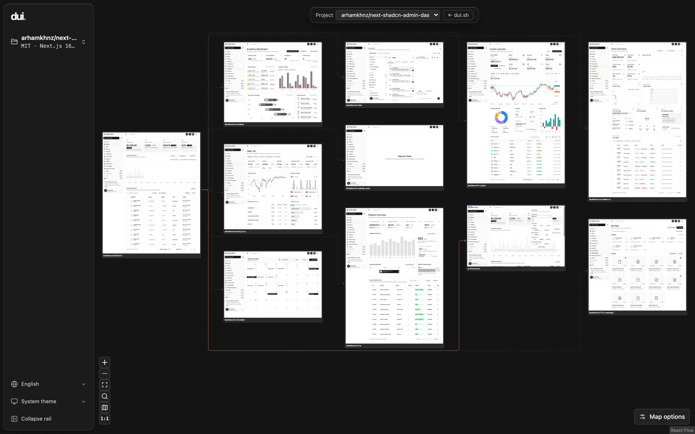

MIT License
★ 16.9k
satnaing/shadcn-admin
React 19 · Vite 8 · TanStack Router · Tailwind v4
Modern SaaS admin dashboard with collapsible sidebar, tables, and Radix dialogs.
dui reads your app through its official compiler, captures every screen × state × modal × width at true aspect ratio, and gives humans a 2D canvas while AI agents consume structured JSON over CLI and MCP.
curl -fsSL https://github.com/de-novo/dui/raw/main/scripts/install | bash

2D Web Canvas (dui open): Full-page true-aspect screens, auto-discovered modal/drawer child nodes, and obstacle-free gutter routing.
Every project below is a real MIT-licensed open-source app captured with
dui map across mobile (375px) and desktop (1280px). Click any card to
inspect its full 2D canvas, gutter navigation edges, modals, and DevTools box model —
and switch projects inside the workspace picker.
React 19 · Vite 8 · TanStack Router · Tailwind v4
Modern SaaS admin dashboard with collapsible sidebar, tables, and Radix dialogs.
Astro 7 · Tailwind CSS v4
Multi-page marketing, startup, pricing, and blog landing-page kit on Astro v7.
Astro 7 · Tailwind CSS v4 · Pagefind
Minimal, accessible editorial blog theme with tags, archives, and search.
Next.js 16 App Router · Base UI · shadcn 4 · Tailwind v4
Multi-dashboard Next.js 16 workspace with CRM, finance, analytics, and auth flows.
Next.js 16 · Base UI · Tailwind v4
Combined landing + dashboard kit with search, customizer, and notification drawers.
Vue 3.5 · Vite 8 · Reka UI · shadcn-vue · Tailwind v4
Responsive Vue 3 admin dashboard demonstrating framework-agnostic route discovery.
All 6 showcase repositories above are verified MIT License open-source projects. Upstream license texts are bundled with each capture archive and indexed in showcase-licenses.json.
Works out of the box on Vite, Next.js App Router, and plain static HTML apps without writing a config file.
Expands WAI-ARIA navigation menus, reads official router registries when present, and captures full-page screenshots plus native/ARIA dialogs at 375px and 1280px.
dui map .Inspect every screen's rendered DOM tree, box model (margin, border, padding, gap), computed colors, and anchored review comments on a single 2D map.
dui open
dui desktop
Compare against main with element-level render diffs and lazy pixel
overlays, or connect AI coding agents directly over MCP stdio.
dui diff --base main --markdown
dui mcpdui never invents screenshots or forces hardcoded aesthetic opinions onto diverse design systems.
Every cell is explicitly marked verified, unverified (with
exact cause like http-error), or unrenderable when a
platform toolchain is unavailable.
Hardcoded universal design lints were removed in v0.2.0. Upcoming v0.3.0 introduces
opt-in DESIGN.md, W3C Design Tokens, and custom audit plugins so teams
validate strictly against their own design system.